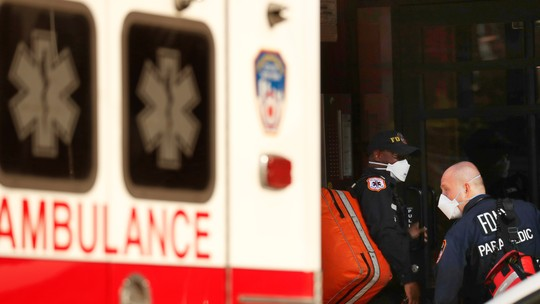
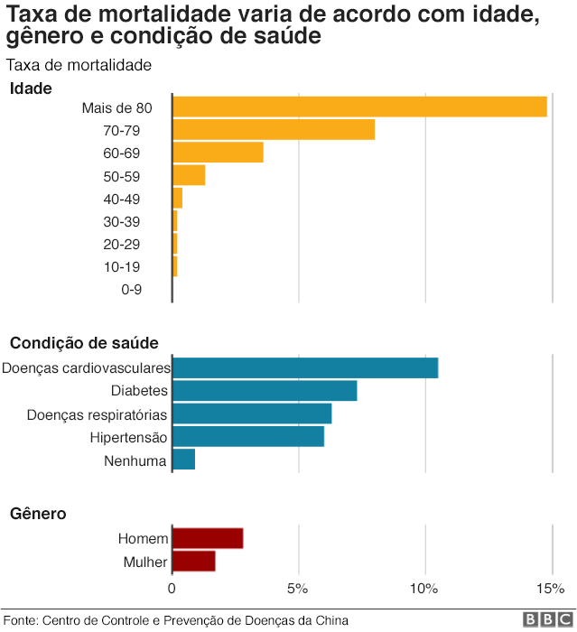

Pagina de Noticias do COVID-19
Brasil tem 1.532 mortes e 25.262 casos confirmados do COVID-19, diz ministério das saúde
 Noticias em Destaque
Noticias em Destaque
São Paulo registra 9.371 casos confirmados e 695 mortes. O Rio de Janeiro contabilizou 42 mortes em um dia e chegou a 224. A Bahia tem 24 mortes e 759 casos confirmados da doença. O Ceará chegou a 103 mortes e 1.975 confirmações. Pernambuco contabiliza 1.284 casos confirmados
.jpg) Noticias em Destaque
Noticias em Destaque
Três vacinas para Covid-19 estão em testes clínicos, diz OMS Série de reportagens do G1 mostra o que se sabe a respeito do combate ao novo coronavírus, desde a reação do corpo até a situação de testes, remédios e vacinas contra a covid-19.
.jpg) Noticias em Destaque
Noticias em Destaque
saúde | Estadão Droga usada para malária tem resultado positivo contra coronavírus O material jornalístico produzido pelo Estadão é protegido por lei. As regras têm como objetivo proteger o investimento feito pelo Estadão na qualidade constante de seu jornalismo.
EUA têm recorde de quase 2.600 mortes por coronavírus em 24 horas Foram 2.569 óbitos entre as noites de terça e quarta-feira, maior número em qualquer país desde início da pandemia. Total de mortes nos EUA alcançou 28.325; casos confirmados são 637.359.
NOVA YORK - Os Estados Unidos passaram a marca de 30 mil mortes causadas pelo novo coronavírus. De acordo com levantamento da universidade americana Johns Hopkins, os EUA chegaram a 31.002 óbitos nesta quinta-feira. No mundo, é o país que registrou mais mortes pela Covid-19, seguido da Itália — mais de 21 mil mortes — e da Espanha — mais de 19 mil. Os EUA também são os líderes em número de infectadas pelo vírus. Segundo dados da universidade, o país tem 640.014 casos. Atrás dos Estados Unidos estão Espanha — mais de 180 mil casos — e Itália — mais de 165 mil. O epicentro da pandemia no país é Nova York, que já registrou 10.899 mortes. O governador do estado, Andrew Cuomo, informou nesta quinta-feira que vai prorrogar as medidas de isolamento. Lojas e escolas ficarão fechadas por, pelo menos, mais duas semanas além do previsto — até 15 de maio. Ele anunciou ainda que a quantidade de hospitalizações chegou ao menor número em uma semana,nos EUA:Polícia encontra 17 corpos, com suspeita de coronavírus.
. A Secretaria Estadual da Saúde Pública do Rio Grande do Norte (Sesap) e a Secretaria Municipal de Saúde de Natal confirmaram na noite desta terça (31) a morte do gastrólogo Matheus Aciole, de 23 anos. Ele é o mais jovem a ter morte pela Covid-19 confirmada no país, segundo informa o G1 com dados das secretarias estaduais. De acordo com boletim de ontem à noite do Ministério da Saúde, 20 de um total de 201 (10%) mortes causadas pelo novo coronavírus até agora não ocorreram em idosos, mas sim em pacientes abaixo dos 60 anos. Sete deles (4%) tinham menos de 40 anos de idade. Entre os pacientes chineses, a parcela de óbitos não foi tão grande entre os menores de 60 anos (6%) e de 40 anos (3%). Alerta:OMS pede a jovens que eles limitem vida social: 'Vocês não são invencíveis' Ainda não se sabe se essa diferença se deve a alguma falha na notificação de todos os casos, e o governo brasileiro diz esperar que a doença se comporte como se viu em outros países. — Entre os jovens, teremos casos assimétricos, casos que precisarão de internação, mas o número de óbitos é baixo. Estatisticamente, a gente acha que vai seguir o que se viu na China, na Itália, em outros lugares — afirmou ontem o ministro da Saúde, Luiz Henrique Mandetta.
Morre índio yanomami que estava
com coronavírus em RO

Morreu na noite desta quinta-feira (9) o jovem yanomami, de 15 anos de idade, que testou positivo para a covid-19 e havia sido internado no Hospital Geral de Roraima (HGR),
em Boa Vista. Desde sexta-feira (3) ele recebia cuidados em um leito de Unidade de Terapia Intensiva (UTI). De acordo com o Distrito Sanitário Especial Indígena Yanomami (Dsei), que atende a região, ele era natural da aldeia Rehebe, nos domínios da Terra Indígena Yanomami, mas passou a residir no município de Alto Alegre, a 87 quilômetros (km) da capital. O motivo da mudança para a Terra Indígena Boqueirão foi dar continuidade aos estudos do ensino fundamental. Ainda segundo o Dsei, o adolescente morava com uma liderança indígena.
Quando o jovem apresentou os primeiros sintomas da covid-19 foi atendido no Hospital Municipal de Alto Alegre. Posteriormente, foi encaminhado ao HGR, já com um quadro de SíndromeRespiratória Aguda Grave (SRAG). Ele refez o teste para diagnóstico da covid-19 e somente a contraprova detectou a infecção Entidades de defesa da causa indígena, como o Instituto Socioambiental (ISA) e o Conselho Indigenista Missionário (Cimi) têm denunciado a subnotificação de casos da covid-19 e demonstrado preocupação quanto ao que isso pode representar de risco para as comunidades. Ambas alertam que ao menos outros dois indígenas contaminados pelo novo coronavírus já foram a óbito e que o governo federal não registrou as ocorrências no balanço. Os indígenas eram uma mulher da etnia borari, de 87 anos, que morreu em Alter do Chão, no município de Santarém (PA), e o outro era um homem de 55 anos, do povo Mura, morto em Manaus.
.jpg)
Mandetta anuncia em rede social que foi demitido por Bolsonaro do Ministério da Saúde
Em meio à pandemia do novo coronavírus, o presidente Jair Bolsonaro demitiu nesta quinta-feira (16) o ministro da Saúde, Luiz Henrique Mandetta. A informação foi divulgada pelo próprio ministro em uma rede social. "Acabo de ouvir do presidente Jair Bolsonaro o aviso da minha demissão do Ministério da Saúde. Quero agradecer a oportunidade que me foi dada, de ser gerente do nosso SUS, de pôr de pé o projeto de melhoria da saúde dos brasileiros e de planejar o enfrentamento da pandemia do coronavírus, o grande desafio que o nosso sistema de saúde está por enfrentar", escreveu Mandetta. "Agradeço a toda a equipe que esteve comigo no MS e desejo êxito ao meu sucessor no cargo de ministro da Saúde. Rogo a Deus e a Nossa Senhora Aparecida que abençoem muito o nosso país", prosseguiu. Após as mensagens, Mandetta afirmou à jornalista da GloboNews e do G1 Andréia Sadi que o substituto dele no cargo será o oncologista Nelson Teich (veja detalhes abaixo). Por volta das 17h30, logo após o fim dos pronunciamentos, a exoneração de Mandetta foi publicada em uma edição extra do "Diário Oficial da União". A nomeação de Nelson Luiz Sperle Teich foi oficializada no mesmo documento. Ex-deputado federal, Mandetta estava à frente da pasta desde o início do governo, em janeiro de 2019, e ganhou maior visibilidade com a crise provocada pelo novo coronavírus. Na tarde desta quinta, Mandetta foi chamado ao Planalto para uma última reunião com Jair Bolsonaro.